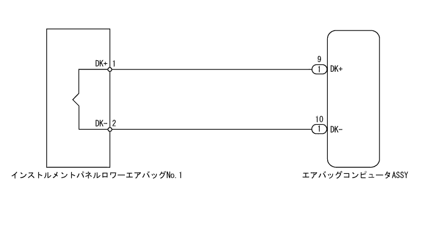
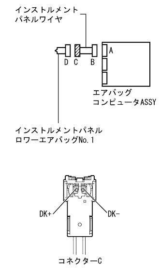
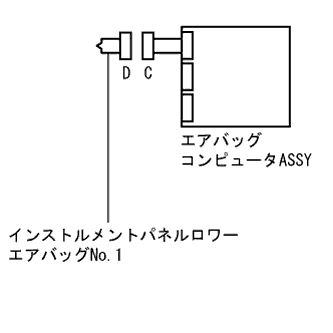
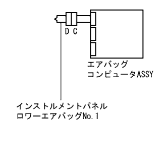

DTC B1860 Driver Side Knee Airbag Initiation Circuit (Short Circuit) |
DTC B1861 Driver Side Knee Airbag Ignition Circuit (Open) |
DTC B1862 Driver Side Knee Airbag Ignition Circuit (Short to Ground) |
DTC B1863 Driver Side Knee Airbag Ignition Circuit (Short to +B) |
| DTC No. | DTC Detection Condition | Trouble Area |
|---|---|---|
| B1860 |
|
|
| B1861 |
|
|
| B1862 |
|
|
| B1863 |
|
|

))| Step 1 | Connector Inspection |
ReferenceDisconnect the battery negative terminal and wait for at least 90 seconds.
Check the connection condition of the connectors connected to the airbag computer assembly and instrument panel lower airbag No.1.
Disconnect the connectors from the airbag computer assembly and instrument panel lower airbag No.1, and check the condition of the terminals of each connector.
Check the condition of the short pins of the connectors with a short mechanism on the instrument panel wire.
Check the instrument panel wire connector for the instrument panel lower airbag No.1 for damage.
|
| ||||
| OK | |
| Step 2 | Driver Side Knee Airbag Squib Circuit Inspection (Between Airbag Computer Assembly and Instrument Panel No.1) |
 |
ReferenceConnect the battery negative terminal and wait for at least 2 seconds.
Turn IG ON.
Using SST (Toyota electrical tester), measure the voltage between each terminal of connector C and body ground.
| Inspection Terminal (Terminal Symbol) | Condition | Standard |
|---|---|---|
| 1 (DK+) - Body ground | IG ON | 1V or less |
| 2 (DK-) - Body ground | IG ON | 1V or less |
Turn IG OFF.
Disconnect the battery negative terminal and wait for at least 90 seconds.
Using SST (Toyota electrical tester), measure the resistance between the terminals of connector C.
| Inspection Terminal (Terminal Symbol) | Condition | Standard |
|---|---|---|
| 1(DK+) - 2(DK-) | Always | Below 1 Ω |
Release the activation prevention mechanism of connector B [1-9 (DK+), 1-10 (DK-)].
Using SST (Toyota electrical tester), measure the resistance between the terminals of connector C.
| Inspection Terminal (Terminal Symbol) | Condition | Standard |
|---|---|---|
| 1(DK+) - 2(DK-) | Always | 1M Ω or higher |
Using SST (Toyota electrical tester), measure the resistance between each terminal of connector C and body ground.
| Inspection Terminal (Terminal Symbol) | Condition | Standard |
|---|---|---|
| 1 (DK+) - Body ground | Always | 1M Ω or higher |
| 2 (DK-) - Body ground | Always | 1M Ω or higher |
|
| ||||
| OK | |
| Step 3 | Inspect Instrument Panel Airbag Assembly Lower NO.1 |
 |
Connect the airbag computer assembly connector.
Connect the battery negative terminal and wait for at least 2 seconds.
Turn the IG ON and wait for at least 60 seconds.
Using SST (TaSCAN), clear the DTCs. (see)
Turn IG OFF.
Turn the IG ON and wait for at least 60 seconds.
Using SST (TaSCAN), check the DTCs. (see)
| Result | Proceed to |
|---|---|
| When DTC B1861 is output | A |
| DTCs other than B1861 are output | B |
|
| ||||
| B | |
| Step 4 | Inspect Airbag Computer Assembly |
Turn IG OFF.
Disconnect the battery negative terminal and wait for at least 90 seconds.
 |
Connect the instrument panel lower airbag No.1 connector.
Connect the battery negative terminal and wait for at least 2 seconds.
Turn the IG ON and wait for at least 60 seconds.
Using SST (TaSCAN), clear the DTCs (see).
Turn IG OFF.
Turn the IG ON and wait for at least 60 seconds.
Using SST (TaSCAN), check the DTCs (see).
| Result | Proceed to |
|---|---|
| DTCs B1860, B1861, B1862 and B1863 are not output. | A |
| DTCs B1860, B1861, B1862 and B1863 are output. | B |
|
| ||||
| A | ||
| ||